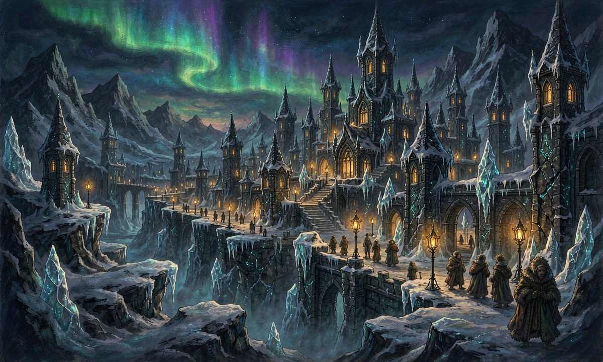
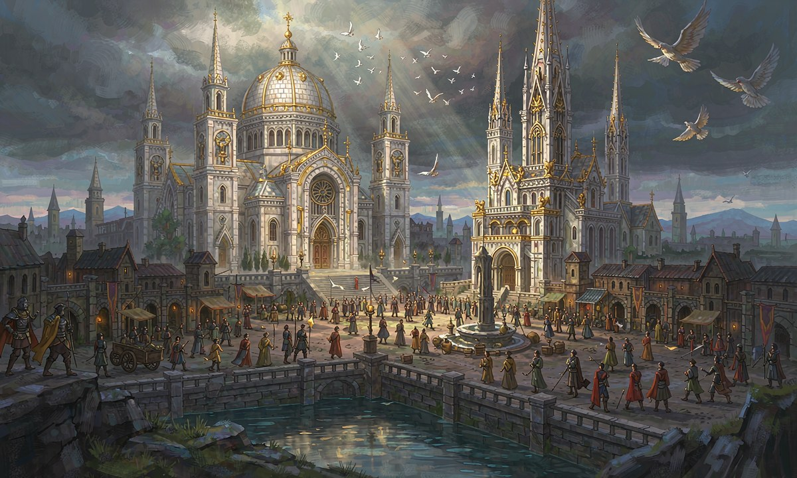
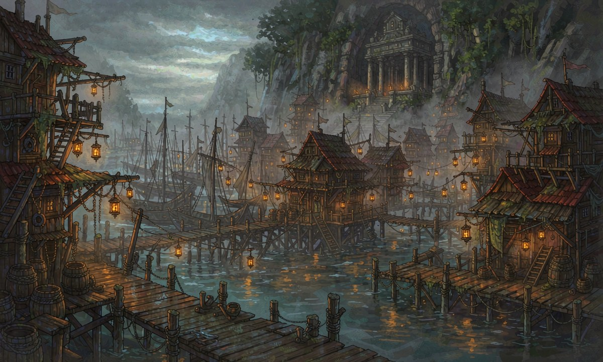
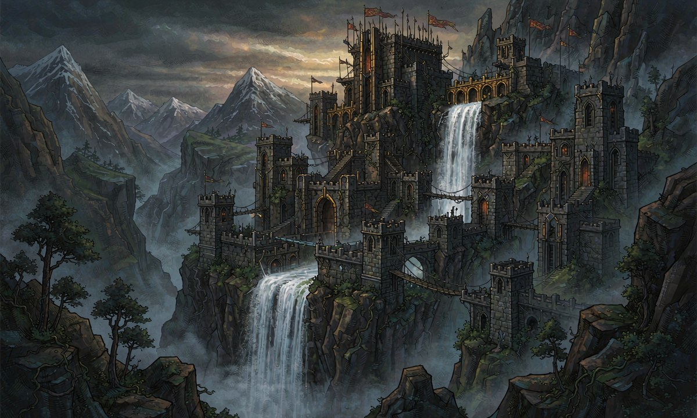

珂莱迪亚

位置北边
信仰无信仰，只信仰夜
政体世俗议会制
执政者
职位议长
姓名艾尔琳
背景出身最古老的守夜人世家
特征极夜国家，一年仅10天白昼，以实用主义著称
军力以守夜人军团闻名，擅长极夜环境作战
饮食
主食霜露稻——极夜微光下生长，收割时带一层霜粉，是立国之粮
副食冰湖冷水鱼（冷熏、盐渍）、岩苔蕨（榨油炖汤）、窖藏发酵根菜
饮品'夜酿'——霜露稻所酿的暖身浊酒，寒夜取暖必饮
风格朴拙实在，不求排场；一锅热食即是好日子
旗帜
名称守夜之旗
底色深靛蓝（极夜色）
纹样中央一弯白色残月与一颗孤星，四周环绕十道银色短光
象征十道短光代表一年仅十天的白昼；残月孤星象征守夜人在长夜中的孤守
旗语我们不迎接黎明，我们守到黎明。
历史
旧历大迁徙时期，一支无法适应光幕节律的族群北徙至极夜之地，凭军事化的'守夜人'组织在寒夜中立足
新历新历初年，守夜人军团与诸氏族议会合流，废王权、立议长制，成为极夜中的秩序灯塔
对外渊源因共同对抗东方的格鲁恩，与奥兰联盟结成传统同盟
外交
盟友奥兰联盟 —— 传统盟国，经济与军事合作密切，边境不设防
敌对格鲁恩 —— 常年对峙，一线边界摩擦不断
中立阿拉纳 —— 谨慎往来，山口设有哨所
奥兰联盟

位置中间
信仰光幕教派（国教）
政体教派与国家权力高度结合，表面王权至上
执政者
职位教皇
姓名奥兰巴托·奥尔古斯
别名圣座大统领
特征对外宣称活了超过两百年
特征2领土最大，军力强盛，教义重仪式与秩序
军力拥有恩格海姆最强大的常规军队，以圣骑士团为核心
饮食
主食银纹麦——磨粉做面包与面条，沃野平原的丰饶之食
副食家畜肉、乳酪、园蔬；因教义重仪式，节庆有隆重的'圣餐'大席
饮品麦酒与平原葡萄酒
特产'安抚面包'——银纹麦所制，麦香能略微安抚心智不稳者，教派常在弥撒后分发
风格丰盛讲究、重礼仪秩序；一餐之丰简即见身份尊卑
旗帜
名称光幕圣旗
底色纯白，镶金边
纹样中央一幅展开的金色垂幕，幕纹之后透出一轮旭日
象征垂幕象征'神以光幕启示世人'，旭日象征光幕之神的恩光
旗语神以光幕启示世人，我等当以仪式回应。
历史
旧历光幕教派在平原沃土扎根，随农业扩张而传播；旧历末年已主导一地秩序
新历新历初年，教派与王权合一成为国教；现任教皇登基（对外称在位逾两百年），奥兰联盟渐成最大强国
对外渊源以教义与军力向外扩张影响，视格鲁恩为最大威胁
外交
盟友珂莱迪亚 —— 传统盟国，以冰冠谷会盟
敌对格鲁恩 —— 视其为最大威胁，主张以封锁线围死
缓冲阿拉纳 —— 名义中立，实为其西陲的缓冲地带
格鲁恩

位置东边
信仰国家教会（国教），被奥兰联盟与珂莱迪亚视为异端
政体秘密神权政治，教会掌控一切
执政者
职位教皇
姓名奥古斯都
背景出身渔民，少年受创致残，凭坚忍与权谋攀至顶端
特征东境半岛之国，三面临海、近海散有属岛；行事隐秘
军力以暗杀者、渗透者、秘术师为主，正面军力较弱但情报战极强
饮食
主食咸鱼与鱼酱（'潮酱'）、海藻、贝类
副食海鸟蛋、腌渍海鲜、岛上旱作的薯类
饮品'咸露'——以海藻与粗麦发酵的浊酒，味咸涩
风格以海为仓，重耐储与便于长途携带；船只出航前必分装干粮
旗帜
名称潜海之旗
底色墨绿近黑（深海底色）
纹样中央一只半阖的银色竖瞳，瞳下压着数道暗色浪纹
象征竖瞳象征'在海浪之下注视一切'的国教；浪纹象征被两国封锁下隐忍潜伏的国势
旗语被遗忘的神明沉默不语，被遗忘的战场终将重新开启。
历史
旧历东境半岛与近海属岛林立，渔村与岛主割据，无统一信仰，靠海为生
新历隐秘教派的遗民后裔暗中渗透半岛与属岛；奥古斯都由渔民崛起，建立秘密神权，被奥兰联盟与珂莱迪亚联合封锁至今
对外渊源以暗杀与渗透立国，正面军力不足，故长于情报战
外交
敌对奥兰联盟与珂莱迪亚 —— 被两国联合封锁，常年对峙
渗透阿拉纳 —— 以商船与暗线渗透，图其中立
阿拉纳

位置西边
信仰无信仰
政体世俗议会制，由各城邦代表组成
执政者
职位首席代表
姓名玛拉
背景出身猎魔人，被称为'最懂得山岭呼吸的人'
特征领土偏大但可用面积不多，山岭极多，易守难攻，对魔物最为友好
军力依靠山地优势与魔物协助防守，正面兵力最少但地形压制极强
饮食
主食以岩苔蕨所榨之油烹制的山粮、粗面饼
副食山菌、野味（鹿、山禽）、山羊乳酪、腌腊肉
饮品'蕨芽茶'与山泉；山货熬汤驱寒
风格就地取材、简朴耐走；猎魔人上路只带干肉与蕨油饼
旗帜
名称山脊之旗
底色灰绿（岩石与林色）
纹样中央一道隆起的灰色山脊，山脊上立一头鹿形兽影，两侧岩隙透出微光
象征山脊象征易守难攻的家园；兽影象征与魔物的共生；岩隙微光象征山岭之息
旗语山的呼吸，就是我们的呼吸。
历史
旧历山岭部落世代与魔物共处，猎魔人守护山道，不奉神明
新历各城邦以共同防御为名联合，组成城邦议会；猎魔人出身的玛拉被推为首席代表，奉行中立
对外渊源夹在三强之间，以地形与中立自保
外交
中立珂莱迪亚与奥兰联盟 —— 名义中立，实则左右逢源，两边通商
敌对格鲁恩 —— 暗中警惕，拒绝其渗透，山道多设暗哨
阵营格局
▸秩序同盟 —— 奥兰联盟 与 珂莱迪亚以共同封锁格鲁恩为纽带，盟约刻于冰冠谷，两国边境不设防
▸中立 —— 阿拉纳城邦联合，对三国皆名义中立，实则左右逢源
▸敌对 —— 格鲁恩被奥兰联盟与珂莱迪亚联手封锁的潜伏神权国，正面军力不足，长于暗线
▸超然 —— 里斯特商会 与 灵廊不涉战事，通行四国；商会在圣幕川的风暴城享有治外之权
国界与缓冲
▸北界（珂莱迪亚／奥兰联盟）以雪线为界，无险可守，故只设一座会盟之关
▸东界（奥兰联盟／格鲁恩）两国隔着欧斯海峡对峙，陆上以圣幕川为缓冲；两国敌对，格鲁恩一侧严设国境，奥兰联盟一侧以圣幕要塞为前哨
▸西界（阿拉纳／奥兰联盟）山脊为墙，唯两河隘一处分路可通，为西陲唯一通衢
▸南界（黑海）黑海是四国南境的天然边界，暗礁密布、海图不全；海盗与走私者的天下，两岸皆不设治
▸欧斯湾奥兰联盟与珂莱迪亚联合舰队的海上封锁线所在，横锁欧斯海峡、自永夜海迄黑海；湾中岛礁太多，始终有三处补不上的缺口
边境与要塞
▸冰冠谷（珂莱迪亚／奥兰联盟共管）· 北界雪线 —— 同盟会盟与换防之地，两国使节往来必经
▸雪脊哨（珂莱迪亚）· 西北山线 —— 监视阿拉纳山口，守夜人常年驻守
▸两河隘（奥兰联盟）· 两河夹山的狭道 —— 西陲唯一通衢，重兵把守
▸石林（阿拉纳）· 南段山道 —— 山道税关兼猎魔人哨所，客商过此须报货
▸圣幕要塞（奥兰联盟）· 圣幕川西缘 —— 光幕教派的前线，专防格鲁恩暗线渗透
▸梅德尔山峰（格鲁恩）· 欧斯湾北岸 —— 暗线出海的跳板，常年雾锁，连本地渔民也不愿靠近
▸黑礁边塞（格鲁恩）· 东南海岸 —— 封锁线上最大的破口，走私与偷渡皆由此入
争议地带
▸圣幕川下游荒野奥兰联盟东南、圣幕川入海处的无主地带。无国界、无驻军、无律法，是盗匪、走私者与逃人的落脚处；里斯特商会在其边缘立起中立商都风暴城
▸黑海南部海域。暗礁密布、海图不全，格鲁恩的暗线与海盗在此共处，两国封锁线皆不及
重要遗迹
▸摩恩圣山（珂莱迪亚）—— 守夜人观测光幕节律的古天文台所在之山，如今半废，仍有人留守
▸长夜碑林（珂莱迪亚）—— 一片刻满名字的石林，历代守夜人皆在此留名。名字还在，人早已无人记得
▸克洛格边境（圣幕川西缘）—— 扼守西缘的边境关隘，一段黑色残垣横亘于此，其上无字可识；老人们对此闭口不谈
▸腥风森林（格鲁恩）—— 一片终年腥咸海风吹拂的密林；格鲁恩的国教，据说就是从林中一座废弃灯塔的火光里点起来的
▸沉钟礁（南部海域）—— 传说古城沉没之处，风暴来临前礁石会自作钟鸣
▸山息圣龛（阿拉纳）—— 猎魔人的圣地，藏在山腹的祭坛，据说能听见「山的呼吸」
▸风息森林（奥兰联盟）—— 一片终年风声不歇的密林，林间凿有水道与双瀑，凿于何时已无人知
▸克洛格要塞（圣幕川）—— 扼守圣幕川通道的要塞，塔顶刻满无人能读的符文；里斯特商会已为它买过三次保险
关键都城
▸月光城（珂莱迪亚）—— 守夜人议长驻地
▸寒霜城（珂莱迪亚）—— 北境边防大城，雪线之下的第一道城墙
▸圣幕城（奥兰联盟）—— 教皇圣座所在，别称「光幕之城」
▸诺索拉姆城（奥兰联盟）—— 光幕教派最早的圣殿所在之城，相传光幕第一次垂落于此，今为朝圣之地
▸银穗城（奥兰联盟）—— 中部平原的粮仓与集市，银纹麦的集散大城
▸泰瑞拉城邦（奥兰联盟）· 灰烬平原之下 —— 半自治的城邦，据灰烬平原南缘，控扼东西商道
▸鹿脊城（阿拉纳）—— 西境山城，山脊之旗的铸造地
▸岩泉城（阿拉纳）—— 依山泉而居的城邦，以酿泉与铁作闻名
▸石脊堡（阿拉纳）—— 城邦议会所在
▸黑礁港（格鲁恩）—— 表面是渔港，实为国教中枢
▸风暴城（里斯特商会）—— 圣幕川边缘的中立商都，四国皆承认其治外之权
山川水系
▸北境雪线珂莱迪亚的冰脊融水，是整片大陆诸河的源头
▸圣川自雪线南下，穿奥兰巴托平原，于东南海湾入海——故其都城圣幕城与诸要塞皆沿河而立
▸西境山泉与瀑布阿拉纳的城邦依山泉而居，落差处多瀑布，山间多有水碓与引泉渠
▸加索斯山脉西境主脉，阿拉纳的天然城墙与猎场，山泉与瀑布皆出于此
▸龙脊山脉北境雪线，珂莱迪亚的屏障，也是全大陆诸河的源头
▸灰烬平原中部平原以东的开阔平原，奥兰联盟与圣幕川之间的缓冲地带，平原之下即为泰瑞拉城邦
▸克洛格平原奥兰联盟东南的平原，与圣幕川相接，是王畿与边境之间的粮秣之地
▸格鲁恩半岛无大河，饮水靠雨窖与季风，故以航海与贸易立国
▸黑海南部海域，暗礁与沉船最多，海图至今不全
疆域与水陆
▸疆域格局四国环抱中部平原而居——珂莱迪亚据北境极夜之地，奥兰联盟居中原沃土、领土最大，阿拉纳守西境山岭，格鲁恩据东境半岛，与奥兰联盟敌对
▸气候北境终年极夜、酷寒，一年仅十天白昼；中部平原四季分明、宜于农耕；西境山岭多雨多雾、湿冷；东境半岛受季风与海雾，多雾而少霜
▸海域黑海（南境唯一以「海」称之的大片水域，暗礁与沉船最多，海图至今不全）· 欧斯海峡（分隔奥兰联盟与格鲁恩的狭窄水道，两国敌对的前沿）· 欧斯湾（欧斯海峡之外的海湾，联合舰队封锁线所在，黑礁港扼其西岸）· 永夜海（北境之外的外海，与极夜同色，航路险恶）· 萨拉德蒙群岛（东北外海的岛群，名义上属格鲁恩，实际由岛主与走私者割据）
▸水陆要道圣川航道（自北境雪线南下穿奥兰联盟平原，于东南入海，沿岸城镇林立）· 两河隘（西陲唯一通衢）· 冰冠谷（北界雪线上的会盟与换防之地）· 雾礁航路（格鲁恩暗线自欧斯湾北岸出海的隐秘水路）
▸通商陆路商队循圣川与两河隘往来，里斯特商会各城据点为枢纽；海路则黑海—欧斯湾一线走私与通商并行，风暴城是圣幕川边缘的中立商都